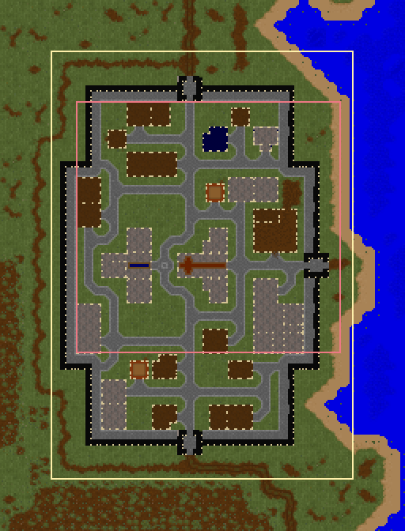

Town boundary, frame coverage and sources
The gold outline encloses both town gates, all walled districts, and their immediate approaches in the Steam FORGE starting world. Native coordinates run from X 928–1119 and Y 2080–2351. The pink outline marks the earlier atlas.

Town records include chunk terrain, fixed objects, world objects, nested contents, NPC bodies and possessions, scheduled visitors, local spawner targets, and local vendor offers verified in the Forge Usecode binary. Dell specifies shapes with wildcard frames. Frame zero illustrates these offers. Apollonia specifies individual frames. Contained items use their owner’s position. Scheduled visitors use the first recorded in-town destination. Spawner and schedule entries identify potential appearances. Their reference counts are independent of how often they appear in play.
“All frames” also includes every stored frame of the town’s shapes and the reflected object-frame variants supported by the sprite format. “Other frame” identifies an available variant without an initial-state reference. Named door transitions are listed separately. The atlas covers world and inventory sprites from SHAPES.VGA. Runtime scripts can introduce further shapes, and UI, portraits, audio and spell effects use separate assets.
Source frames use the daytime VGA palette. Each comparison fits its own box. UO land IDs, static IDs and animation bodies are separate namespaces. Body references use stock animation poses. “Custom art” marks a visual distinction the current stock recipe cannot communicate. Wearables match by item type and equipment slot. Their thumbnails identify the UO item. Stock assemblies use existing sprites, tile offsets or hues. Human entries use an equipped stock body. “Review substitute” marks alternate frames or multi-state props where the candidate still needs a visual state check. “Stock candidate” records a proposed substitute. Object alignment, seams, hinges, layering and animations still need an in-client check.
Download all mappings · Remaining custom artwork · Wearable item IDs and slots · Outfit recipes · Outfits and dungeon pieces · Source references and coordinates · Input fingerprints and counts
Public review snapshot. Candidate and approval labels describe artwork review, not guaranteed in-game coverage. Ultima VII and Ultima Online artwork belongs to its respective rights holders. Snapshot details